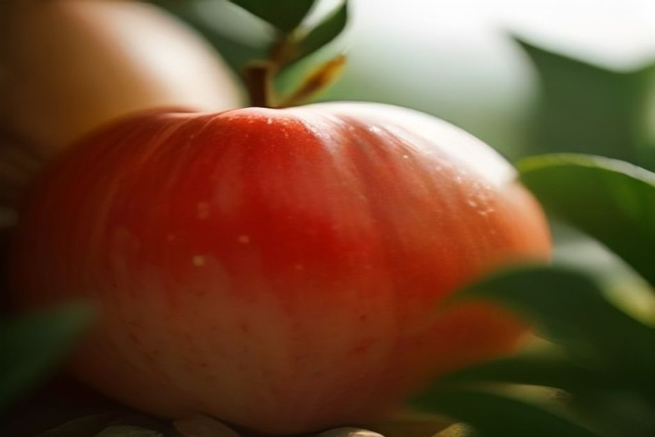
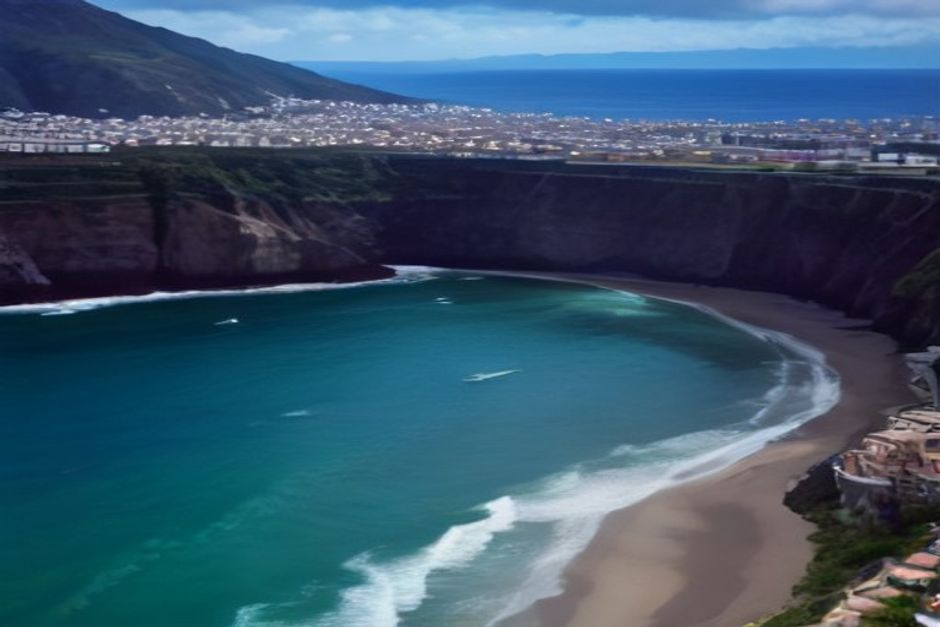

Se cercate la festa della mela di Madeira, il nome da tenere a mente è Festa do Pêro e il posto è Ponta do Pargo, all'estremità occidentale dell'isola. Non è un evento pensato per i turisti: è la sagra di un paese di campagna, con bancarelle, musica e una sfilata in costume. Qui trovate le date del 2026, come arrivarci da Funchal, cosa aspettarvi e come inserirla in un viaggio a Madeira.
Festa della Mela di Madeira 2026: date e luogo
L'edizione 2026 della Festa do Pêro era in programma sabato 19 e domenica 20 settembre a Ponta do Pargo, una parrocchia rurale del comune di Calheta, nell'angolo più a ovest di Madeira. A organizzarla ogni anno è il Centro Comunitário di Ponta do Pargo.
La festa cade sempre a settembre, a raccolto concluso. Per chi pianifica il viaggio dell'anno successivo, il consiglio è semplice: scegliete un soggiorno che comprenda un fine settimana di settembre e controllate le date aggiornate prima di prenotare, perché il calendario viene confermato di anno in anno.

Cos'è la Festa do Pêro, in parole semplici
Nella variante locale del portoghese, "pêro" è la parola antica per la mela coltivata in questa zona dell'isola. La festa è dunque la festa della mela di Madeira: gli agricoltori di Ponta do Pargo e delle parrocchie vicine portano il raccolto e lo espongono insieme a tutto quello che se ne ricava, cioè marmellate, torte, dolci e conserve.
È nata come piccolo ritrovo parrocchiale ed è cresciuta fino a diventare una delle fiere rurali più vivaci dell'autunno madeirense. Per un fine settimana richiama gente da tutta l'isola.
Cosa si fa alla festa: bancarelle, musica e sfilata
È una fiera all'aperto, costruita attorno alle bancarelle di cibo e prodotti. I coltivatori vendono le mele direttamente dalle cassette, accanto a marmellate, torte e dolci fatti in casa. Se volete portarvi a casa qualcosa di autentico, questo è il posto giusto.
Per tutto il weekend c'è musica dal vivo: gruppi di musica popolare, band regionali e, a volte, qualche nome noto a livello nazionale. Il momento simbolo è la sfilata allegorica. Gli abitanti indossano abiti tradizionali e sfilano con i vecchi attrezzi domestici e agricoli che un tempo servivano a lavorare questa terra.
Non immaginate nulla di scenografico o organizzato per i visitatori. Somiglia di più a un arraial di paese, la tipica festa popolare portoghese: informale, un po' disordinata e proprio per questo vera.
Consigli pratici per la giornata
- Ingresso: l'evento è all'aperto e gratuito.
- Contanti: portateli con voi per le bancarelle di cibo e prodotti.
- Abbigliamento: l'altopiano sulle scogliere è esposto al vento dell'Atlantico, quindi una felpa leggera non guasta.
- Tempo a disposizione: con il viaggio di andata e ritorno, contate una giornata intera o almeno un lungo pomeriggio.
Come arrivare a Ponta do Pargo da Funchal
Ponta do Pargo si trova oltre Calheta e Paul do Mar, a circa un'ora o un'ora e mezza di auto da Funchal lungo la ER222 e la ER101. Non c'è un autobus diretto pensato per gli orari della festa, perciò l'auto a noleggio o il taxi sono la soluzione più pratica.
Il viaggio fa parte dell'esperienza: la ER101 costeggia la costa sud-occidentale e poi sale sull'altopiano sopra le scogliere di Ponta do Pargo. Partite con calma e lasciate un margine per il rientro, soprattutto se volete fermarvi fino al tramonto.
Cosa vedere a Ponta do Pargo oltre alla festa
La parrocchia è conosciuta soprattutto per il Farol da Ponta do Pargo, il faro che segna il punto più occidentale di Madeira. Sorge su scogliere affacciate su un orizzonte atlantico completamente aperto, ed è uno dei posti più liberi da ostacoli dell'isola per guardare il tramonto, sempre che il cielo collabori.
Fuori dal weekend della festa è una zona agricola tranquilla: terrazze di banani e vigne, muretti a secco e pochissimi altri visitatori. Un volto di Madeira molto diverso dalla costa sud intorno a Funchal, più affollata e più turistica.
Festa della mela e gita in barca: si possono unire?
Nello stesso giorno no. Ponta do Pargo è molto oltre il tratto di costa sud che una barca privata in partenza dalla Marina do Funchal può raggiungere. Conviene pensare a due giornate diverse: una su strada per la festa e il faro, una sul mare.
Per quella sul mare, Chifbay è una barca privata con partenza dal Pontile C della Marina do Funchal: la barca è solo per il vostro gruppo, fino a 5 persone, con due skipper abilitati di Madeira. Nella gita di giorno, che parte alle 10:00 o alle 14:00, si costeggiano Câmara de Lobos e Cabo Girão, con bagno e stand up paddle a Fajã dos Padres. Sono 2 h 30 fino a Ribeira Brava per 500 €, oppure 3 h fino a Ponta do Sol per 600 €.
Se preferite qualcosa di più breve, l'uscita al tramonto parte 1 h 15 prima del tramonto, tutto l'anno: 2 h fino a Cabo Girão per 400 €, oppure 2 h 30 fino a Ribeira Brava per 500 €, senza sosta per il bagno. I prezzi sono per tutta la barca, non a persona. A bordo sono inclusi cibo e bevande, un video a 360° Insta360, le riprese con il drone (se il meteo lo permette) e le foto scattate con una vera macchina fotografica. Si può annullare gratuitamente fino a 24 ore prima della partenza.

Come organizzare il viaggio attorno alla festa
Se siete a Madeira per più giorni, ecco uno schema semplice che funziona:
- Un giorno per l'ovest: festa, bancarelle, faro e, se vi va, il tramonto sulle scogliere.
- Un giorno per il mare: una gita privata da Funchal lungo la costa vicina.
- Il resto del tempo per Funchal e dintorni, senza la fretta di incastrare tutto.
Per altre idee sulle uscite in mare, date un'occhiata alla pagina con le migliori gite in barca a Madeira, oppure alla pagina informazioni pratiche per orari, punto d'incontro e cosa portare.
Le feste più grandi di Madeira si fanno a Funchal. Quelle meglio custodite si fanno in parrocchie come questa.
Se il vostro viaggio coincide con quel weekend di settembre, vale la pena farci un salto: un pomeriggio genuinamente locale e una buona scusa per vedere il bordo occidentale dell'isola, sospeso sulle scogliere.